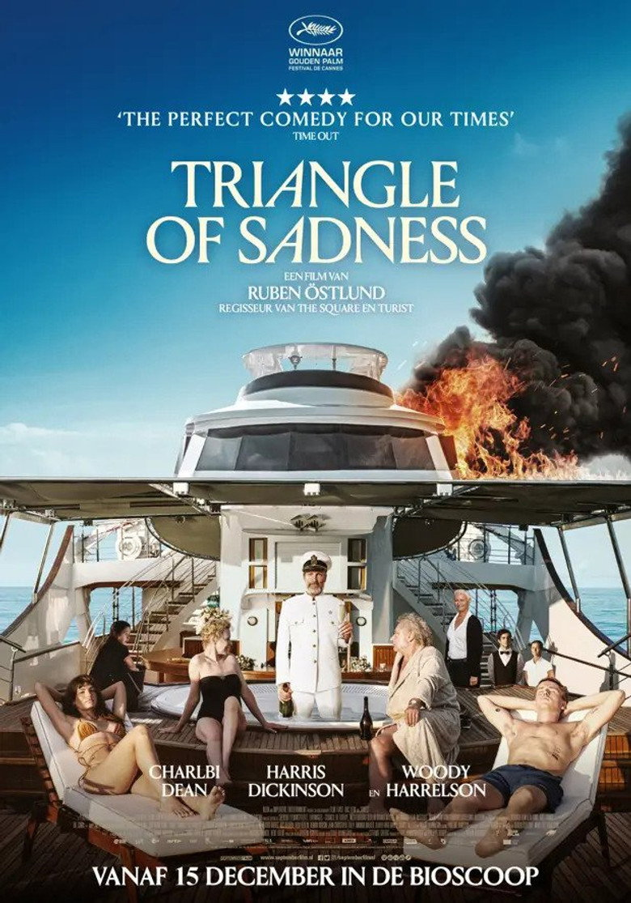

Fiche technique

Synopsis
Carl et Yaya, couple de mannequins-influenceurs dont l'économie conjugale se négocie addition par addition, sont invités (contre contenu sponsorisé) sur une croisière de très grand luxe : oligarque russe du commerce d'engrais, fabricants d'armes courtois, milliardaire de la tech — et un capitaine marxiste alcoolisé qui refuse de sortir de sa cabine[1].
Le dîner de gala, programmé un soir de forte houle, tourne au naufrage gastrique généralisé — puis au naufrage tout court, pirates compris. Sur l'île où s'échouent les survivants, la hiérarchie s'inverse d'un coup : seule Abigail, « dame pipi » du yacht, sait pêcher et faire du feu. Celle qui nettoyait les toilettes devient « capitaine », et découvre à son tour ce que le pouvoir fait à qui le détient[1][4].
Contexte de production
Premier film en anglais du Suédois Ruben Östlund — déjà Palme d'or pour The Square (2017) —, Sans Filtre prolonge sa méthode d'entomologiste des humiliations sociales, nourrie ici de deux mondes qu'il connaît par sa femme, photographe de mode : le mannequinat (le titre original désigne la ride du souci entre les sourcils, celle que « le Botox efface ») et l'économie de l'apparence — « la beauté comme monnaie »[1].
Le tournage, lancé début 2020, est percuté de plein fouet par la pandémie — interrompu en mars à 37 % du plan de travail, repris puis re-suspendu à l'été, achevé fin 2020 entre les îles grecques, les studios de Film i Väst et le Christina O, l'ancien yacht d'Aristote Onassis, décor réel de la croisière[1]. Méthode Östlund oblige : jusqu'à 23 prises par scène, et 22 mois de post-production pour régler la mécanique de précision du chaos[1]. Ombre portée sur le film : Charlbi Dean, inoubliable Yaya, meurt brutalement en août 2022, trois mois après la Palme — ce fut son dernier rôle[1].
Structure narrative
Trois actes titrés, comme une pièce classique : « Carl & Yaya » (le couple et l'économie du désir), « Le Yacht » (la société flottante et son effondrement), « L'Île » (l'expérience de laboratoire : que reste-t-il des hiérarchies quand la monnaie ne vaut plus rien ?). La critique française y a vu tantôt une architecture de fable, tantôt « un gimmick un peu gratuit »[2] — mais la logique est implacable : chaque acte reprend la question du précédent (qui paie ? qui sert qui ?) à une échelle plus nue.
Le pivot est le dîner du capitaine : quinze minutes d'anthologie où la houle, les huîtres et le champagne démantèlent physiquement la classe dominante, pendant que le capitaine marxiste américain (Woody Harrelson) et l'oligarque capitaliste russe se récitent Marx et Reagan au mégaphone dans le navire qui sombre — le débat d'idées du XXe siècle comme karaoké de fin du monde[4]. Le film s'achève sur un hors-champ : une pierre levée, un cri suspendu — Östlund laisse le spectateur décider si le nouveau pouvoir vaut l'ancien.
Mise en scène et procédés techniques
Östlund filme comme il éprouve ses spectateurs : plans fixes qui durent au-delà du confortable, cadres cliniques où le malaise a le temps de monter, répétition jusqu'à l'usure (les 23 prises se voient à l'écran — dans la précision millimétrée des gags)[1][2]. La séquence de la tempête pousse cette rigueur dans le registre inverse : « une explosion de vomissements et de diarrhées » orchestrée comme un ballet — plateau monté sur vérins, moquette souillée « à l'excès », gags liquides synchronisés sur les roulis[4]. Le Polyester résume bien le régime du film : c'est quand Östlund « s'autorise à piocher avec une cruauté jubilatoire dans le registre du cartoon et du film catastrophe » qu'il fait mouche — l'équilibre tenant entre « le rire gras et un sens du danger »[2].
Ce sadisme burlesque n'est pas gratuit : la caméra traite les corps des puissants exactement comme le récit traite leur pouvoir — en les soumettant à la gravité. Et le cinéaste s'inclut dans le procès : « c'est là qu'en tant que cinéaste, il a les mains aussi sales qu'eux », note justement la critique[2] — le plaisir du spectateur devant l'humiliation des riches étant, lui aussi, une matière que le film manipule sciemment.
Personnages principaux
Carl (Harris Dickinson), mannequin en fin de cote — dans la mode, c'est la femme qui gagne plus — ouvre le film sur la scène de ménage la plus précise du cinéma récent : une addition de restaurant disséquée jusqu'à l'os des rapports hommes-femmes-argent. Yaya (Charlbi Dean) assume, elle, le cynisme lucide de l'influenceuse : elle photographie des assiettes qu'elle ne mange pas et prévoit de devenir « femme de trophée » — la beauté est son capital, elle en connaît l'échéancier[1].
La révélation du film est Abigail (Dolly de Leon, performance saluée mondialement) : invisible pendant tout l'acte II — elle est la seule que la caméra ne regardait pas —, elle devient sur l'île le centre exact du récit et sa démonstration : la compétence renverse la table, puis le pouvoir refait la table à l'identique, matriarcat compris[1][2]. Autour d'eux, une galerie d'une drôlerie noire : l'oligarque « roi de la merde » (Zlatko Burić, European Film Award de l'acteur), le couple d'adorables fabricants de grenades, et le capitaine marxiste de Woody Harrelson, ivre de citations et d'impuissance[1].
Thèmes
Le thème cardinal est la beauté et l'apparence comme capital : le film ouvre sur un casting de mannequins sommés d'alterner sourire H&M et moue Balenciaga — la grimace de classe apprise en une seconde. Tout le récit décline cette économie : corps cotés, sourires facturés, générosité sponsorisée[1].
Vient ensuite la hiérarchie comme fiction liquide : il suffit d'une tempête pour que la pyramide du yacht — passagers, équipage blanc, personnel de nettoyage philippin — se retourne exactement, l'île rejouant la structure du navire à l'envers. Östlund ne croit pas à l'inversion vertueuse : Abigail au pouvoir reproduit les privilèges (la cabane du « capitaine », les bretzels contre les faveurs), et c'est là le troisième thème, le plus pessimiste — le pouvoir comme fonction, indifférente à qui l'occupe. Reste la question que la satire pose au spectateur lui-même : notre jubilation devant la punition des riches est-elle une conscience politique ou un divertissement de plus ? Le film, « pas vraiment subtil » mais parfaitement conscient de l'être[2], encaisse la critique d'avance — c'est sa force et sa limite.
Réception critique et postérité
À Cannes, huit minutes d'ovation, des rires de stade — et une presse aussitôt coupée en deux : « exécration totale ou engouement rieur »[4]. Le jury de Vincent Lindon tranche : Palme d'or, la deuxième d'Östlund à 48 ans[1]. La suite confirme le clivage : 71 % sur Rotten Tomatoes, 63 sur Metacritic, Richard Brody dénonçant une « démagogie ciblée » quand d'autres célèbrent la satire[1] ; 32,9 millions de dollars de recettes, trois nominations aux Oscars (film, réalisation, scénario) et quatre European Film Awards[1].
« Vomissements jouissifs » Titre de la critique cannoise de Bulles de Culture — tout le débat critique en deux mots[3]
La postérité immédiate a fait du film un marqueur générationnel du « eat the rich » cinématographique (aux côtés de Parasite, The Menu ou Glass Onion) — et de Dolly de Leon une star tardive et mondiale. La mort de Charlbi Dean, trois mois après la Palme, a ajouté au film une mélancolie que rien dans sa cruauté comique ne laissait prévoir[1].
Conclusion
Sans Filtre est exactement ce que son titre français annonce : une satire qui a renoncé au tamis. Là où Snow Therapy et The Square opéraient au scalpel, Östlund sort ici le canon à eau — et assume de perdre en finesse ce qu'il gagne en énergie comique. On peut légitimement préférer l'entomologiste au forain ; on ne peut pas nier que le forain connaît sa machine : chaque gag est construit, chaque humiliation chorégraphiée, chaque rire calibré pour se retourner contre celui qui rit.
Si le film reste, ce sera pour son geste central : avoir filmé la lutte des classes comme une affaire de péristaltisme — les hiérarchies sociales tenant exactement le temps que les estomacs tiennent. La pierre levée du dernier plan ne retombe jamais : à chacun de décider si Abigail frappe, et donc si le pouvoir change de mains ou seulement de visage. Une Palme d'or qui se termine sur un spectateur sommé de voter — c'est, quoi qu'on pense du film, du cinéma politique au sens propre.
Sources
- Wikipédia (en) — « Triangle of Sadness » : production (tournage pandémique, Christina O, 23 prises, 22 mois de post-production, budget), structure, distribution, mort de Charlbi Dean, Palme d'or, nominations aux Oscars, European Film Awards, réception chiffrée et citations critiques. en.wikipedia.org/wiki/Triangle_of_Sadness
- Le Polyester — « Critique : Sans filtre » (Gregory Coutaut) : structure en trois actes, registre cartoon/film catastrophe, équilibre rire/danger, réserves sur la subtilité, « les mains aussi sales qu'eux ». lepolyester.com
- Bulles de Culture — « Sans filtre (2022) de Ruben Östlund : vomissements jouissifs » (Cannes 2022), consultée via recherche web. bullesdeculture.com
- Mondociné et presse cannoise associée (consultées via recherche web) : séquence de la tempête, polarisation de la réception (« exécration totale ou engouement rieur »), affrontement Marx/Reagan au mégaphone. mondocine.net
- Festival de Cannes — fiche officielle « Triangle of Sadness ». festival-cannes.com